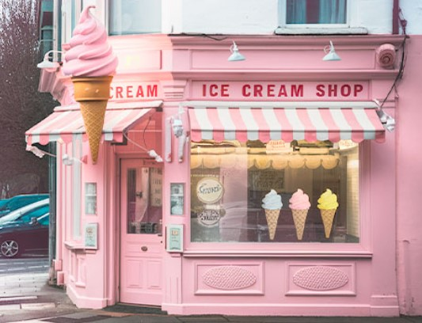

Nuestros comienzos...
Nuestra historia comienza en Turdera, Buenos Aires, en el año 2016, cuando una familia emprendedora decidió dar vida a su sueño: crear un lugar donde compartir momentos felices y disfrutar de helados de calidad. Motivados por el amor por la gastronomía y el deseo de ofrecer algo especial a la comunidad, fundamos nuestra heladería con la pasión y dedicación que nos caracterizan. Desde entonces, hemos trabajado con entusiasmo para perfeccionar nuestras recetas y brindar una experiencia auténtica y deliciosa a cada cliente que nos acompaña en este camino. Hoy, seguimos creciendo y avanzando, siempre con el mismo espíritu familiar que nos impulsa a seguir endulzando la vida de todos en Turdera y sus alrededores.
